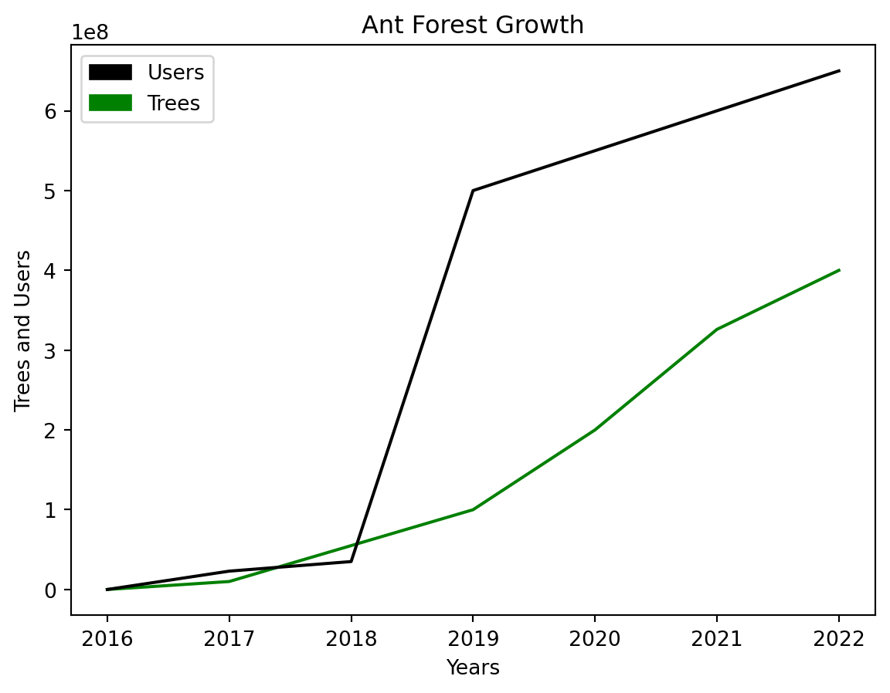
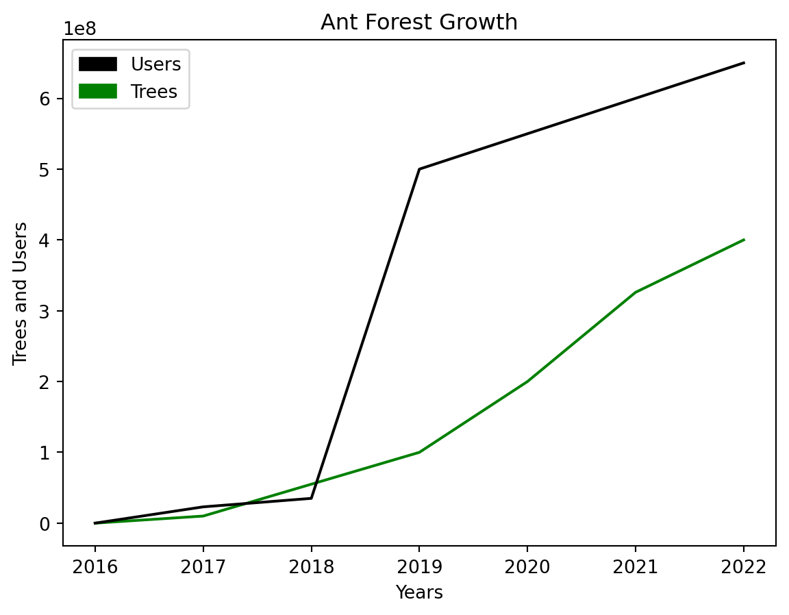
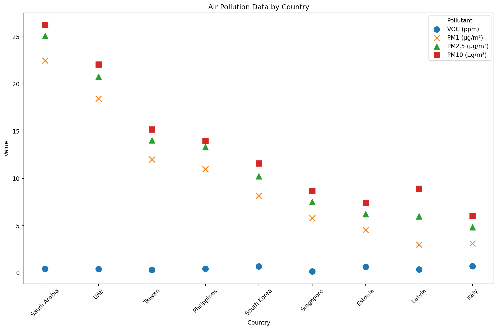
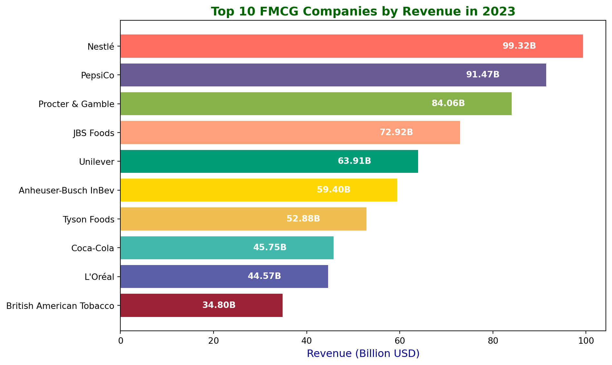

ant_forest()
Designing for Sustainability requires a higher level of systems thinking than traditional design methods. While AI allows us to look at a larger number of design scenarios thank previously feasible, there are many approaches looking for ways to design for sustainability. Designing for Sustainability is fundamentally a hopeful act imbibed with the dream a healthier world is possible.
While there are many design words, X lists over Y design words Specialized Design Fields:, and there are designers who define / brand themselves by their design method, I advocate looking at design methods as a toolbox, where I can pick the tool suitable for the problem set in front of me. Here I only look at a small number of design practices I find relevant to designing a sustainability app for college students.
Design Studies, a field that studies design as a subject.
Transformation towards eco-design has strong political support from the European Union. The Ecodesign for Sustainable Products Regulation (ESPR) legislation entered into force in the EU on July 18, 2024 (European Commission, 2024) following the (European Parliament, 2022) proposal in 2022 whereby the European Commission established a general framework for “eco-design requirements for sustainable products, repealing rules currently in force which concentrate on energy-related products only,” thus setting up the standards and a level playing-field for the organizations operating on the EU market. Virginijus Sinkevičius, the EU Commissioner for the Environment, Oceans and Fisheries, is quoted as describing eco-design “respects the boundaries of our planet” (European Commission, 2022).
While the ESPR regulation chose Eco-Design as the overarching terminology, designing for sustainability has many names, with subtle differences of emphasis and nuance. Researchers and practitioners discuss Circular Design, Cradle-to-Cradle Design, Green Design, Regenerative Design, Climate-Responsive Design, Life-Centered Design, and others. In most cases, designing for sustainability makes use of systems thinking, underlining the importance of looking at the entire lifecycle of a product or service. Sustainable design encompasses all human activities, making this pursuit an over-arching challenge across all industries with the complex interdependencies within. (Ceschin & Gaziulusoy, 2016) gives a comprehensive overview of main the themes sustainable design and their main contributions and limitations in their well–researched “Evolution of design for sustainability: From product design to design for system innovations and transitions”. As this research is practice-oriented (i.e., my goal here is to find design approaches that could provide context for and at the end of the day - influence my prototype), I will refrain myself to looking at some key design fields which I find relevant to my project.
Human-Centered Design, the grandfather of design with attitude. There’s an ISO standard for human-centered design, with the designated code ISO9241-210, revised as ISO 9241-210:2019 and up for revision as ISO standards are reviewed every 5 years (2019, n.d.).
Life-Centered Design recognizes human impact on our surrounding environment as well as non-human animals making sure to include them among stakeholders. While Human-Centered Design has become popular, the effect humans are having on biodiversity should be considered when designing. “[T]he design phase of a physical product accounts for 80% of its environmental impact” notes(Borthwick, Tomitsch & Gaughwin, 2022) in their framework for life-centered design.
Designing for Trust, Weinschenk (2011) says “People expect most online interactions to follow the same social rules as person-to-person interactions. It’s a shortcut that your brain uses to quickly evaluate trustworthiness.”
Climate-Responsive Design embeds a building within the environmental constraints of a place and looks for opportunities use the land, wind, sun, local materials, and local vernacular history and culture when considering a design. Architect Susanne Brorson suggests sustainability should be considered in the earlier phases of design instead of trying to fix problems later discussing climate-responsive design principles (EVM maaarhitektuuri keskus, 2019). The sentiment is echoed by (Lee & Doevendans, 2011) who edited a volume on sustainable approaches of world-renowned architects: “The principles of sustainable design are rooted in the building’s relationship to the site and its environmental conditions such as topography, vegetation, and climate.”
Biomimicry is about being inspired by nature while Biodesign focuses on design involving biology in the design itself. Janine Benyus, who coined the word Biomimicry (Benyus, 2009) looks at very practical cases of innovation where engineers and biologist meet and (Dicks, 2023) provides a much more philosophical account of following the example of nature. In a similar vein, Material Ecology is the wording preferred by the architect Neri Oxman based at the MIT Media Lab working with biomaterials as a proponent of Nature-Centric Design that adheres to the principles of ecological sustainability with both an ecologically conscious mindset and practical toolset (Hencz, 2022). Neri Oxman’s expressions in her (World Economic Forum, 2016) interview: “ecology-indifferent”, “naturing”, “mother naturing”, “design is a practice of letting go of all that is unnecessary”, “nature should be our single client” remind me how language shapes human thinking. Massachusetts Institute of Technology (MIT) is a source of many fantastic innovations, and another
Cradle-to-Cradle Design, focusing on recyclability of products. Anon (2021h) and 活動通 (n.d.) Cradle to Cradle Nordic circular design in Taiwan
Focusing on the financial sector, (Thomas & Mantri, 2022)’s philosophical account advocates for an “inside-out” design pattern, much like natural systems, starting from the smallest structures to guarantee resilience and survival, instead of trying to control their external environment.
Regenerative Design suggests dematerializing (digitizing) economies is not enough. Design should look for avenues to regenerate damaged or even completely destroyed natural systems – ecosystems, biodiversity, land, forests, lakes, rivers - natural habitats.
Service Design, Ceschin & Gaziulusoy (2016) shows how design for sustainability has expanded from a product focus to systems-thinking focus placing the product inside a societal context of use. For example Anon (n.d.d), recycled clothing maker FREITAG offers sustainability-focused services such ass cargo bikes so you can transport your purchases and a network for shopping without payment = swapping your items with other members, as well as repairs of their products. Loaning terminology from service design, the user journey within an app needs to consider each touchpoint on the way to a state of success.
Durability is an important dimension for sustainability. High quality durable products are more sustainable as they last longer and less likely to be thrown away. Forming an emotional bond with the product makes it feel more valuable (Zonneveld & Biggemann, 2014). (Chapman, 2009) argues in his seminal paper (and later in his book) for “Emotionally Durable Design”, the simple idea that we hold to things we value and thus they are sustainable. We don’t throw away a necklace gifted to us by mom, indeed this object might be passed down for centuries. (Rose, 2015) has a similar idea, where “Enchanted Objects” become so interlinked with us, we’re unlikely to throw them away. This has implications for sustainability as the object is less likely to be thrown away.
As the above shows, there are many partially overlapping design words created by different people for diverse purposes. Design vocabulary may be created for distinguishing a particular type of design from another - or to market oneself as the creator of the word. Here I will use the lens of sustainability - another complex term - to look at how design can contribute to eco-friendly products.
Architecture of the Well-Tempered Environment Banham (1999)
In sustainability there are rarely good choices. Rather it’s a question of avoiding the worst choices.
Scenario-building is a key tool for sustainability. Because sustainability is so complex, sustainable design makes use of scenarios.
Life Cycle Assessment and Environmental Impact Analysis are needed to provide eco-design scenarios (de Otazu et al., 2022).
Speculative Design makes use of future scenarios to envision contexts and interactions of use. First introduced by (Dunne & Raby, 2013) in their seminal book, the field aims to question the intersection of user experience design and speculative fiction. (Barendregt & Vaage, 2021) explores the potential of speculative design to stimulate public engagement; thought experiments can spur public debate on an issue chosen by the designer. Phil Balagtas, founder of The Design Futures Initiative at McKinsey, discusses the value of building future scenarios at his talk at Google. His favorite example, the Apple Knowledge Navigator, first appeared in an Apple vision video in 1987 and took two decades to materialize in the real world. It was inspired by a similar device first shown in a 1970s episode of Star Trek as a magic device (a term from participatory design), which then inspired subsequent consumer product development. It took another two decades, until the launch of the iPhone in 2007 - a total of 40 years.
user experience, iteration (Google Design, 2019)
Speculative design can help us imagine non-anthropocentric (Hupkes & Hedman, 2022; Edwards & Pettersen, 2023)as well as dystopian futures (Pinto et al., 2021).
Participatory Design and Speculative Design can be complementary as in the work of (Neuhoff, Simeone & Laursen, 2023), used together to focus on engaging users deep in the design process to truly understand their needs on a non-superficial level. For both speculative and participatory design, the cost makes it into a niche activity. Generative AI holds the promise to allow designers to dream up and prototype quicker. In order to build a future, it’s relevant to imagine and critique a future. By being quickly generate prototypes, once can test out ideas with the future users involving more of the community and stakeholders. To be able to build something, one first needs to imagine it; imagination is crucial for change.
Designing user interfaces for sustainable interactions means incorporating data and toolsets to enable designers to make decisions which reduce emissions of their design. Companies like AutoDesk are putting CO2 calculations inside their design software, helping designers reduce material usage, energy consumption, CO2 emissions, while increasing recyclability(Mike Haley, 2022). Software is key to building more sustainable products, already for decades (Gupta et al., 2023). AI-assisted design enables design for sustainability because the design process is where sustainability begins. AI has the potential to provide the parameters for sustainability. (Singh & Sarkar, 2023) proposes an AI tool for deciding the suitable life cycle design parameters.
Design encompasses most everything in our daily lives. Humans live in artificial environments where most things are designed by humans. The experiences we take part in are increasingly created based on some type of data.
Data is the interface between idle resources and retail demand, which makes exchange of value possible.
Digital Sustainability, information pertaining to emissions would flow through the economy not unlike the carbon cycle itself.
Interaction Design for Climate Change: how can we change common UIs so they take into account sustainability?
AI-Assisted Design
Tool vs Assistant? (Tools are mostly non-anthropomorphic?). Tools do not call attention to themselves. They don’t necessarily rely on human-like representations that call attention to themselves but rather are available in-context to help streamline specific tasks.
Data-Driven Design Enables Sustainability. Sustainability touches every facet of human existence and is thus an enormous undertaking. Making progress on sustainability is only possible if there’s a large-scale coordinated effort by humans around the planet. For this to happen, appropriate technological tools are required.
Data-driven design has limitations.
Coputer
One mode
The concept of Social Objects is People need something to gather around and discuss. Sharing.Lab (2015): I’m interested in the concept of a “social object”.
Red Route Analysis is an user experience optimization idea inspired by the public transport system of London (Oviyam™, 2019; Anon, 2021c; Xuan, 2022).
Narrative Design
Humans respond well to storytelling, making character design and narrative design relevant to interaction design. Large language models (LLMs) such as ChatGPT are able to assume the personality of any character that exists inside of its training data, creating opportunities for automated narrative design.
The rising availability of AI assistants may displace Google search with a more conversational user experience. Google itself is working on tools that could cannibalize their search product. The examples include Google Assistant, Google Gemini (previously known as Bard) and large investments into LLMs.
Alethea AI (2021): discusses writing AI Characters, creating a personality.
Writing as training data? large language models. GTP3.
Stories start with a character.
For digital products (apps) the main application of interaction design is for growth in usage, how to get more people (user journey and conversion funnels) to use the product i.e user acquisition, retention, engagement, and monetization and keep using it (retention and engagement), often optimizing onboarding, features, and personalization (Steger, 2019; Kende, 2023).
Hypothesis and validation for iterating on features.
Total addressable market (TAM), serviceable addressable market (SAM), target audience (TA)
Platform economy companies popularized and expanded Data-Driven Design in the service of growth marketing (also known colloquially as growth hacking). Capturing User Data was part of this strategy which enabled improving the products. Digital Product Design is increasingly data-driven. Digital platforms operate a design as a process in a continuous feedback loop, where measurements, experiments, predictive analytics and personalization form a data-drive design culture. As we humans go about our daily business, governments and companies track our activities using various technologies, which produces massive amounts of user interaction data. Platform economy companies are the capture and use large amounts of data from users. Data is useful for designing better products. Designing for high retention (users keep coming back). Network Effects, the more people use a platform, the more valuable it becomes. Platforms that continuously add features (provided consumer legislation allows it) may eventually evolve into superapps, which are useful for providing services for a wide category of human needs. Bundling many services under one super-brand. Superapps are possible thanks to Nudge, Economies of Scale, Network Effects, Behaviour Design. Large Digital Platforms have a very small number of workers relative to the number of users they serve. This creates the necessity for using automation for both understanding user needs and providing the service itself. Creating a good product that’s useful for the large majority of users depends on Data-Driven Design.
Design is as much about how it works as it’s about the interface.
Digital product design can be seen as a specific discipline under the umbrella of Experience Design. In Michael Abrash (2017) Meta Oculus augmented reality incubation general manager Laura Fryer: “People buy experiences, not technology.”
Young people expect a product. Intelligent Interfaces use interaction design to provide relevant and personalized information in the right context and at the right time.
There are many approaches to design - from playful to practical to critical and to data-driven. Nonetheless, many types of design share a common goal designing for a good user experience. Simplifying.
Personalization: the largest businesses today (measured in number of users) design the whole user experience.
Scale, Popular consumer platforms strive to design solutions that feel personalized at every touchpoint on the user journey (to use the language of service design) at the scale of hundreds of billions of users.
Superapps are honeypots of data that is used for many types of behavior modeling. (Suarez et al., 2021) suggests using alternative data from super-apps to estimate user income levels, including 4 types of data: Personal Information, Consumption Patterns, Payment Information, and Financial services. (Roa et al., 2021) finds super-app alternative data is especially useful for credit-scoring young, low-wealth individuals. The massive amounts of data generated by these companies are used by smart cities to re-design their physical environments.
Twitter (now X) is becoming a financial app.
Inspiration from WeChat.
How can the mobile devices which the majority of us are carrying with us every day, help us make decisions about the businesses we engage with? In terms of user experience, can personalized AI advisors empower our financial actions from shopping to saving and investing?
| Enablers of Platform Economics | Pros | Cons |
|---|---|---|
| Network effects | The more people use a platform, the more valuable it becomes both for the company and the user. | Data is not portable or difficult to migrate. You can’t leave because you’ll lose the audience. There’s a lock-in effect. |
| Scalability | ||
| Data-driven Design | ||
| Behaviour Design |
Platform Economy marketplace companies like Airbnb, Uber among many others match optimize how our cities work.Superapps are prevalent in China and South-East Asia. (Giudice, 2020) finds WeChat has had a profound impact on changing China into a cashless society, underlining how one mobile app can transform social and financial interactions of an entire country. China is the home of many superapps and (Vecchi & Brennan, 2022) discusses the strategies Chinese apps are taking to expand to other markets. (Shabrina Nurqamarani et al., 2020) discusses the system consistency and quality of South-East Asian superapps Gojek and Grab.
Platform economy companies have been criticized for their lack of workers rights (ESG). (Anon, 2024b) uses portable air pollution tracking devices to documents how gig workers are subjected to pollution.
Uber is creating an all-purpose platform; only 4.1% of rides were electric (Levy, 2023).
X (formerly Twitter) is becoming a superapp?
Could there be Sustainability Superapps?
How to design sustainability superapps? Lots of options in a single app. (Fleet Management Weekly, 2022) “Sustainability and superapps top Gartner’s Top 10 2023 Trends List”. (Dave Wallace, 2021) “The rise of carbon-centric super apps”. (goodbag, 2023) “goodbag: Sustainable Super App”. What would a sustainable investment platform that matches green investments with the consumers look like, if one saw the side-by-side comparison of investment vehicles on their ESG performance? Also (Bernard, 2022).
Undheim (2024) Ecotech
Lori Perri (2022)
Anon (2022d)
Anon (2021g) PayPal dominance
Zeng (2015) (need to pay for article!)
Huang & Miao (2021) (need to pay for article!)
Anon (2022h)
(Cuppini, Frapporti & Pirone, 2022) historical overview of the development of capitalism from linear Fordism through platform economy and logistics’ revolution which allows for circular economies to happen in a city.
Adaptive AI
Aka Gamification
For decades, marketers and researchers have been researching how to affect human behavior towards increasing purchase decisions in commerce, both offline and online, which is why the literature on behavioral design is massive. One of the key concepts is nudge, first coined in 2008 by the Nobel-winning economist Richard Thaler; nudges are based on a scientific understanding of human psychology and shortcuts and triggers that human brains use and leverages that knowledge to influence humans in small but powerful ways (Thaler & Sunstein, 2009).
The principles of nudge have also been applied to sustainability. For example, a small study (n=33) in the Future Consumer Lab in Copenhagen by (Perez-Cueto, 2021) found that designing a “dish-of-the-day” which was prominently displayed helped to increase vegetarian food choice by 85%. Experiments by (Guath, Stikvoort & Juslin, 2022) focused on environmentally friendly online purchases in Sweden (n=200) suggest nudging can be effective in influencing online shopping behavior towards more sustainable options. A study of behavior change in Australia at large university setting (N = 156) by (Novoradovskaya et al., 2021) found nudging behavioral change had a significant effect and the author suggested it may help to avoid some of the “16 billion paper coffee cups are being thrown away every year” globally (based on the abstract - I was unable to access the full paper).
Google uses nudges in Google Flights and Google Maps, which allow filtering flights and driving routes by the amount of CO2 emissions, as well as surfacing hotels with Green Key and EarthCheck credentials, while promising new sustainability features across its portfolio of products (Sundar Pichai, 2021). Such tools are small user interface nudges which Google’s research calls digital decarbonization, defined by (Implement Consulting Group, 2022) as “Maximising the enabling role of digital technologies by accelerating already available digital solutions”.
In (Kate Brandt & Matt Brittin, 2022), Google’s Chief Sustainability Officer Kate Brandt set a target of “at least 20-25%” CO2 emission reductions in Europe to reach a net-zero economy and the global announcement set a target of helping 1 billion people make more sustainable choices around the world (Jeni Miles, 2022). In addition to end–users, Google offers digital decarbonization software for developers, including the Google Cloud Carbon Footprint tool and invests in regenerative agriculture projects (Anon, 2021b; Google, 2023).
Google VERY IMPORTANTT Google (2021). Justine Calma (Oct 6, 2021, 10:01 AM GMT+3) Google UX eco features. Anon (2021a) Google green routes. Sarah Perez (2022) shows how google added features to Flights and Maps to filter more sustainable options. How CO2 is shown by Google starts hiding emissions? Anon (2022b)
| Feature | Product | Nudge |
|---|---|---|
| Google Maps AI suggests more eco-friendly driving routes Mohit Moondra (n.d.) | Google Maps | Show routes with lower CO2 emissions |
| Google Flights suggests flights with lower CO2 emissions | Google Flights | Show flights with lower CO2 emissions |
| Wizzair Check carbon impact Anon (n.d.t) | WizzAir | Offset on Checkout |
Some notable examples:
| Name | Technique |
|---|---|
| Prompting | Create cues and reminders to perform a certain behavior |
| Sizing | Decrease or increase the size of items or portions |
| Proximity | Change the physical (or temporal) distance of options |
| Presentation | Change the way items are displayed |
| Priming | Expose users to certain stimuli before decision-making |
| Labelling | Provide labels to influence choice (for example CO2 footprint labels) |
| Functional Design | Design the environment and choice architecture so the desired behavior is more convenient |
Bain et al. (2012) “Promoting pro-environmental action in climate change deniers” (Need access!)
Allcott (2011) “Social norms and energy conservation” (Need access!, ncku doesn’t subscribe)
Schuitema & Bergstad (2018) “Acceptability of Environmental Policies” (Need access!)
Nilsson et al. (2016) “The road to acceptance: Attitude change before and after the implementation of a congestion tax” (Need access!)
Berger, Lange & Stahl (2022) (Need access!)
Anon (2022g)
United Nations Conference on Trade and Development (last) (2023)
Climatiq (2023) Automate GHG emission calculations
EarthCheck (2023) sustainable tourism certification
LFCA (2023) corporate climate action
Greenhouse Gas Protocol (2023) standards to measure and manage emissions
Playing for the Planet Alliance (2021)
Gamification makes uses of nudges.
Students in Indonesia enjoy using Kahoot and it’s gamification elements are perceived to have positive impact on individual learning outcomes so they are happy to continue using it (Wirani, Nabarian & Romadhon, 2022).
Anon (n.d.x) game company going green
Alibaba’s Ant Forest (螞蟻森林) has shown the potential gamified nature protection, simultaneously raising money for planting forests and building loyalty and brand recognition for their sustainable action, leading the company to consider further avenues for gamification and eco-friendliness.
| Year | Users | Trees | Area |
|---|---|---|---|
| 2016 | ? | 0 | |
| 2017 | 230 million | 10 million | |
| 2018 | 350 million | 55 million | 6500 acres?? |
| 2019 | 500 million | 100 million | 112,000 hectares / 66, 000 hectares? |
| 2020 | 550 million | 200 million | 2,7 million acres? |
| 2021 | 600 million | 326 million | |
| 2022 | 650 million | 400 million | 2 million hectares |
ant_forest()
Open Data Enables Collaboration
Data-driven design requires access to data. making the movement towards open data sharing very important. Some countries and cities are better than others at sharing data openly.
| Country | Project | Reference |
|---|---|---|
| Sweden | Swedish open data portal | Anon (n.d.aa) |
| Type | Example |
|---|---|
| Transparency Accountability Advocate | |
| Compliance Data Aggregator | |
| Data Intelligence Hub | |
| Worker Voice Tool | Caravan Studios (2022): “Worker Connect” |
| Traceability tool | trustrace.com |
| Open data platform | |
| Knowledge sharing platform | business-humanrights.org |
Sustainability needs to be balanced with privacy.
Research on personal data tracking also known as quantified self or self-monitoring is abundant. Wearable devices including the Apple Watch, Oura Ring, Fitbit and others, combined with apps, help users track a variety of health metrics. Apart from health, wearable devices have been used to track other metrics such as physiological parameters of students at school to determine their learning efficiency (Giannakos et al., 2020). Not only can health metrics be tracking, but exposure to pollution as well as personal carbon footprint, are all to some extent trackable (if not traceable).
Personal carbon footprint tracking apps (aka CO2 calculators) in a mid-sized German city (N=216) helped overall emission reduction by 23% correlating with feedback from the app specifically reducing emissions from heating 26.9%, food 16.4%, household 34.7% reduction, and mobility 12%(Hoffmann et al., 2024).
We have a limited carbon budget so calculating CO2e-cost become integrated into every activity.
CO2e calculations will be part of our everyday experience
Personal carbon footprint calculators have been released online, ranging from those made by governments and companies to student projects.
Zhang’s Personal Carbon Economy conceptualized the idea of carbon as a currency used for buying and selling goods and services, as well as an individual carbon exchange to trade one’s carbon permits (Zhang, 2018).
Personal Carbon Trackers
Similar to personal health trackers, personal CO2 trackers help one track emissions and suggests sustainable actions.
| App | Description |
|---|---|
| Commons (Formerly Joro) | Finacial Sustainability Tracking + Sustainable Actions |
| Klima | Offset Subscription |
| Wren | Offset Subscription |
| JouleBug | |
| eevie | |
| Aerial | |
| EcoCRED | |
| Carbn | |
| LiveGreen | |
| Earth Hero | |
My personal air pollution exposure tracked using the Atmotube device attached to my backpack. Tracking air pollution and realizing how bad the over in my grandma’s house is: add picture. Quantified Self is an example of Digital Health. There is a parallel in health to sustainability and indeed both are inextricably linked. Open Source code for calculating air pollution exposure AQI (Atmotech, 2024).
air_chart()
EEG (electroencephalogram), ECG (Electrocardiogram), EDA (Electrodermal Activity): tracking features of brain, heart and nervous system activity. Brain Music Lab founder and brain researcher Grace Leslie: “brain music sounds like a warm bathtub”. Tracking blood sugar with app and patches. Blood sugar trackers. Blood glucose tracking is popular even for people without diabetes, to optimize their activity (Anon, 2021d). Tracking urine consistency inside your toilet with WithThings. Companies like NeuralLink are building devices to build meaningful interactions from brain waves (EEG).
Apple is a leader in health tracking. In 2022 Apple outlined plans for “empowering people to live a healthier day” and Apple’s HealthKit provides a growing list of health metrics, which app developers can tap into (Apple, 2022a, 2022b). Liu et al. (2019) tracks how wearable data is used for tracking sleep improvements from exercise. Grigsby-Toussaint et al. (2017) made use of sleep apps to construct humans behaviors also known as behavioral constructs. The Oura ring is an example of calm technology, providing helpful data without calling an attention to itself (Phelan, 2024).
Use technology Wearables to be more aware of one’s health. Example of quantified self device.
fitness metrics
Could one track personal sustainability in a similar fashion? (Shin et al., 2019)’s synthesis review of 463 studies shows wearable devices have potential to influence behavior change towards healthier lifestyles. Saubade et al. (2016) finds health tracking is useful for motivating physical activity. The urban environment has an influence on health.
While so of the behavior changes may sound simple - like switching from driving to walking - and would have a large environmental effect, they are hindered by factors from personal motivation to (lack of) suitable urban architecture. (Delclòs-Alió et al., 2022) discusses walking in Latin-American cities. Walking is the most sustainable method or transport but requires the availability of city infrastructure, such as sidewalks, which many cities still lack.
Personal data enables behavior change.
While the scale of climate change is too big for individual action to make a difference, individual action can foster hope and a sense of collective responsibility (Nature, 2020).
Kristian Steensen Nielsen (2022) Individual climate action!!!
The UN has been handing out Global Climate Action Awards since 2011 for idea such as the Climate Credit Card in Switzerland, which automatically tracks emissions of purchases, creates emissions’ reports for the user which can then be offset with investments in climate projects around the world (UNFCCC, 2023).
Give Gen-Z the tools to turn climate anger into positive change to transform companies
Echeverría, Gimenez-Nadal & Molina (2022) suggests greener modes of mobility.
Anon (2017)
Brantley (2021)
Contact Kalle Lasn, Culture Jam
“ESG Accessibility”, Large-scale accessibility to ESG,
increase ESG accessibility
Shop sustainability in Estonia (Lilleväli, 2022; Anon, n.d.j). Tarbimise jalajälg poes (Helen Saarmets, 2021). Offsets at the point of sale (Anon, n.d.l).
Green Finance Platform (2020) report predicts the rise of personalizing sustainable finance, because of its potential to grow customer loyalty, through improving the user experience. Similarly to good design, interacting with sustainable finance for the ‘green-minded’ demographics, providing a reliable green product is a way to build customer loyalty.
Another aspect is tracking one’s mental health. (Tyler, Boldi & Cherubini, 2022) surveys the use of self-reflection apps in the UK (n=998).
AI Financial Advisors will need to go further to motivate users.
DBS digibank app added a financial advisor named “Your Financial GPS” in 2018 DBS (2018)
“urban metabolism” (Anon, 2021i; Claire Moran, 2018), city in-out flows accounting method
Tsai et al. (2019)
Burger, White & Yearworth (2019)
Aromatario et al. (2019) behavior changes
Ayoola et al. (2018) wellbeing data
Godfrey et al. (2018)
Thomas et al. (2018)
Tonne et al. (2017)
Anselma, Mazzei & De Michieli (2017)
Forlano (2017) post-humanism and design
Greenbaum & Gerstein (2016)
Millings et al. (2015)
Reis et al. (2015)
Bower & Sturman (2015)
Fletcher (2022)
Ryan (2022) uses the “capability methodology” to evaluate if apps help people eat healthily.
Baptista et al. (2022) apps for sleep apnea
The small screen estate space of mobiles phones and smart watches necessitates displaying content in a dynamic manner. Virtual reality glasses (called AR/VR or XR in marketing speak) need dynamic content because the user is able to move around the environment. These are questions that interaction design is called upon to solve. Hoang (2022): “Dynamic interfaces might invoke a new design language for extended reality”.
Speaking is one mode of interaction that’s become increasingly possible as machines learn to interpret human language.
| Mode of Interaction | |
|---|---|
| Writing | |
| Speaking | |
| Touching | |
| Moving | |
We’re in an industrial revolution. Many companies are investing into transforming their processes. “[T]ransition to a low carbon economy presents challenges and potential economic benefits that are comparable to those of previous industrial revolutions” (Pearson & Foxon, 2012). It’s possible to re-design entire industries and that is exactly the expectation sustainability sets on businesses. Across all industries, there’s a call for more transparency. Conversations about sustainability are too general and one needs to look at the specific sustainability metrics at specific industries to be able to design for meaningful interaction. There’s plentiful domain-specific research showing how varied industries can develop eco-designed products. I will here focus on 3 industries that are relevant for college students.
Food and clothes (I’m omitting housing and transport here) are part of the immediate environmental impact of college students.
…for Provenance and Traceability
Companies like Qima provide inspection and certification services QIMA (2024)
Circular economy is a tiny part of the world economy. (Circle Economy, 2022) reports only 8.6% of world economy is circular and 100B tonnes of virgin materials are sourced every year.
Encouraging Sustainable Design and Reducing Waste.
(Liu et al., 2023) reports, e-waste is growing 3%-5% every year, globally. (Thukral & Singh, 2023) identifies several barriers to e-waste management among producers including lack of awareness and infrastructure, attitudinal barriers, existing informal e-waste sector, and the need for an e-waste license.
McDonough & Braungart (2002) from Cradle to Grave book was released over 2 decades ago, change is slow.
McGinty (Thu, 08/06/2020 - 11:25): How to Build a Circular Economy
Dull (2021) book, many current technological hurdles can be overcome by supply chain professionals who are experts in connecting supply streams.
also known as circular economy. Assuming that as individuals we want to act in a sustainable way, how exactly would be go about doing that?
…for Sustainable Products
How can design enable/help/encourage sustainability?
Use imagination
Societal movements change things: implication for design: build a community
Growing public understanding of how nature works and intersects with our use of money.
Hedberg & Šipka (2021) argues digitization and data sharing is a requirement for building a circular economy.
“Circular Petrochemicals” Lange (2021)
Supply chain transparency enables stakeholder accountability (Circularise, 2018; Doorey, 2011; Fox, 2007).
Recycling Critical Raw Materials, digitization of mining allows enhance the reliability of supply chains (CRM Alliance, 2020).
EIT RawMaterials
Fast-Moving Consumer Goods (FMCG) also known as Consumer Packaged Goods (CPG) are large global congloremates operating with low margins and high volumes (Toh, 2024). The largest of them have several billions in revenue (Kenton, 2024).
fast_consumer_goods()
Rise of e-commerce has pushed logistics companies to increase delivery efficiency to keep up with FMCG sales (Deliverect, 2024).
Just like Fast-Moving Consumer Goods, fast fashion operates with low margins and follows consumer trends. Young people are the largest consumers of fast fashion (Anon, n.d.ad). (In European Environment Agency, 2022 European Environment Agency (EEA)) estimates based on trade and production data that EU27 citizens consumed an average 15kg of textile products per person per year. The European Commission wants to reduce the impact of fast fashion on EU market (ERR, 2022). (Millward-Hopkins, Purnell & Baurley, 2023) shows how 50% of the textile waste in the UK is exported to other countries.
“26 million tons of clothing end up in China’s landfills each year, propelled by fast fashion” (Tian Macleod Ji, 2024).
Greenwashing is prevalent in the fashion industry. Problem: Emily Chan (2022a) report says there’s not enough transparency in fashion. Fashion Revolution Foundation (2022) Fashion transparency index. (Wikirate, 2022b): “Among the Index’s main goals are to help different stakeholders to better understand what data and information is being disclosed by the world’s largest fashion brands and retailers, raise public awareness, educate citizens about the social and environmental challenges facing the global fashion industry and support people’s activism”. Consumer understanding of sustainability is limited. Mabuza, Sonnenberg & Marx-Pienaar (2023) shows consumer knowledge of apparel coloration is very limited.
2.4 Trillion USD fashion industry contributing 2%-8% of total global GHG emissions, 100B USD lost to lack of recycling, contributes 9% of microplastics (Adamkiewicz et al., 2022). (Centobelli et al., 2022) Fashion industry year uses 9B cubic meters of water, 1.7B tonnes of CO2, 92 million tonnes of textile waste. Köhler et al. (2021) Globally 87% of textile products are burned or landfilled after 1st consumer use.
There are local policy initiatives aiming to tackle the waste problem. For example the New Standard Institute’s proposed “Fashion Act” to require brands doing business in New York City to disclose sustainability data and set waste reduction targets (Emily Chan, 2022b) .
(Leung & Luximon, 2021) There’s a growing know-how on how to produce sustainably and which materials to use. “Handbook of Footwear Design and Manufacture” Chapter 18 - Green design. Industry collaboration can raise the bar for everyone, such as the Better Cotton Initiative (Better Cotton, 2023).
Story of Patagonia (Chouinard, 2005)].
Sustainable Fashion, Textile Design
Across industries, reports are saying there isn’t enough transparency.
(Hannah Ritchie, 2020; US EPA, 2016) GHG emission inventory by sector
Marrucci, Marchi & Daddi (2020) Italian retail supermarkets carbon footprint?
Gyabaah et al. (2023) research across several dumpsites across Ghana revealed up to 12% of the landfill consisted of textile waste.
imperfectidealist (2020) Fashion sustainability vs greenwashing
Anon (2023e) Ethical Shopping
Anon (2023c) Ethical brand?
Good On You (2023) Sustainable fashion company evaluations
Anon (n.d.p) Garment Worker’s rights
Emily Chan (2022c): fashion companies can’t be held accountable for their actions (or indeed, their lack of action).
WikiRate (2023)
Anon (2022c): “Political consumerism”, “Instant Gratification for Collective Awareness and Sustainable Consumerism”
FashionChecker (2023)
Eesti Disainikeskus I Estonian Design Centre (2021) Circular textiles
Eesti Kunstiakadeemia (2022) Sustainable Fashion education
Anon (n.d.f)
“The mainstream fashion industry is built upon the exploitation of labor, natural resources and the knowledge of historically marginalized peoples.”
Anon (n.d.ab)
“Secrecy is the linchpin of abuse of power…its enabling force. Transparency is the only real antidote.” Glen Greenwald, Attorney and journalist.
Stand.earth (2023)
Anon (n.d.s)
Anon (n.d.c) Bangladesh Garment Manufacturers and Exporters Association
Minimize shopping, buy quality, save CO2, invest.
Textile Exchange (2023) Ethical fashion materials matter
Textile Exchange (2021): Policy request
Free clothes
Vanish UK (2021) “Generation rewear” documentary, sustainable fashion brands
Storbeck (2021) and Remington (2020): Zalando says Fast fashion must disappear
Infinited Fiber (2023)
Cleantech Group (2023) Global cleantech 100
Anon (2023d) Alterations and repairs made easy
Anon (2023b) Ethical brand ratings
Re-designing industrial food systems for an increasing global population is a challenge. Supply chain innovation in food industries may enable more transparency. provenance and traceability of food has implications for sustainability and health.
Global warming leading to droughts and extreme weather, wars and conflicts increased volatility in food prices (Eshe Nelson, Ana Swanson & Jeanna Smialek, 2023).
“The agricultural sector contributes to approximately 13.5% of the total global anthropogenic greenhouse gas emissions and accounts for 25% of the total CO2 emission” (Nabipour Afrouzi et al., 2023). Poore & Nemecek (2018) suggests 26% of carbon emissions come from food production. Saner et al. (2015) reports dairy (46%) and meat and fish (29%) products making up the largest GHG emission potential. Springmann et al. (2021) proposes veganism is the most effective decision to reduce personal CO2 emissions.
Farm to Fork is a European Union policy to shorten the supply chain from the producer to the consumer and add transparency to the system. Patel et al. (2023) livestock products (meat) are 15% of agricultural foods valued at €152 billion in 2018 globally.
Anon (n.d.z)
Anon (n.d.u) app for nutrition and sustainability data
Fishing
75% of fishing is done using industrial Trawling, which has environmental impact
Bailey & Eggereide (2020) shows how the Norwegian government plans to increase salmon production 5x by 2050. How can this be sustainable? Mostly this means fish-farming
Complex supply chains make seafood (marine Bivalvia, mollusks) logistics prone to fraud, leading to financial losses and threats to consumer health (Santos et al., 2023). (Chang et al., 2021) fish fraud is a large global problem but it’s possible to use DNA-tracking to prove where the fish came from. In “2019, the 27 KURA SUSHI branches in Taiwan sold more than 46 million plates of sushi. in Taiwan”. Illegal, unreported and unregulated fishing (IIU) fishing is widespread; the EU is adopting countermeasures (Kim & Lim, 2024). Muñoz et al. (2023) Is there such a thing as sustainable fishing? Bottom trawling is the worst and should be banned. Katie Gustafson (2022) proposes a “Uniform traceability system for the entire supply chain” for seafood. Mamede et al. (2022) proposes Seafood tracing: Fingerprinting of Sea Urchin.
The same is true for cocoa beans, which are at risk from food fraud (Fanning et al., 2023).
Perennial Crops, Multi-year crops reduce inputs of gasoline, labor, etc. (Aubrey Streit Krug & Yin Lu, 2023). Large agritech companies like Monsanto rely on selling seeds annually for profits putting them at odds with Perennial crops. Single-year seeds have led to farmer suicides when crops fail in poor communities.
Sustainability Accounting Standards Board, part of the International Financial Reporting Standards Foundation
Global Reporting Iniative
Anon (2022f)
Anon (2021f) “Real Time ESG Tracking From StockSnips”
Waters (2015) (Need access!)
Cawthorn & Hoffman (2016) (Need access! ncku doesn’t subsribe)
Gamborg & Jensen (2017) (Need access!)
Neethirajan & Kemp (2021) using biometric sensors to track livestock sustainability.
Inc (n.d.)
Tim Nicolle (2017)
EAT-Lancet diet
Culture, Community, Cuisine, Storytelling
Food Waste
There are several initiatives to reduce food waste by helping people consume food that would otherwise be throw away.
| Name | |
|---|---|
| Karma | |
| ResQ Club | (Kristina Kostap, 2022) ResQ Club in Finland and Estonia for reducing food waste by offering a 50% discount on left-over restaurant meals before they are thrown away. |
| Kuri | Haje Jan Kamps (2022) Less impact of food |
| Social media groups (no app) |
| Perspective | Content |
|---|---|
| “The diagnostic perspective” | “All hands on deck to fix the climate” |
| “The regenerative perspective” | “Diversity, soil health and organic agriculture to the rescue” |
| “The fossil-free perspective” | “Profitable Swedish companies to rid agriculture and the food chain of fossil fuel” |
| “The consumer-driven perspective” | “A wish-list of healthy, high-quality and climate-friendly foods” |
| “The hands-on perspective” | “Tangible solutions within the reach of consumers and the food industry” |
“regenag”, Václav Kurel, we need help consumers demand regenerative agriculture Baltic Sea Action Group (2023)
Kommenda et al. (2022) Carbon Food Labels
Food Sovereignty: “The global food sovereignty movement, which had been building momentum since its grassroots conception in the late ’90s, quickly gained traction with its focus on the rights of people everywhere to access healthy and sustainable food. One of the pillars of the movement lies in using local food systems to reduce the distance between producers and consumers.”
CAITLIN STALL-PAQUET (2021): “We can grow foods just as well in the inner city as we can out in the country because we’re agnostic to arable land,” says Woods. “Because we grow indoors and create our own weather, [climate change] doesn’t affect our produce.”
Renée Salmonsen (2018): Vertical farm in Taoyuan
Catherine Shu (2023): Intensive Farming Practices vs Farm to table
Akshat Rathi (2021) and Lowercarbon Capital (2023) climate startup funding.
Only make what is ordered.
Circular design is only possible if supply chains become circular as well.
It’s important in which structure data is stored, affecting the ability to efficiently access and manage the data while guaranteeing a high level of data integrity, security, as well as energy usage of said data.
The complexity of resource and delivery networks necessitates more advanced tools to map supply chains (Knight et al., 2022). The COVID19 pandemic and resulting blockages in resource delivery highlighted the need to have real-time visibility into supply chains (Finkenstadt & Handfield, 2021).
Blockchains are a type of shared database where the data is stored in several locations with a focus on making the data secure and very difficult to modify after it’s been written to the database. Once data is written to the blockchain, modifying it would require changing all subsequent records in the chain and agreement of the majority of validators who host a version of the database. Blockchain is the main technology considered for accounting for the various inputs and complex web of interactions between many participants inside the supply chain networks. There are hundreds of paper researching blockchain use in supply change operations since 2017 (Dutta et al., 2020). Blockchains enable saving immutable records into distributed databases (also known as ledgers). It’s not possible to (or extremely difficult) to change the same record, only new records can be added on top of new ones. Blockchains are useful for data sharing and auditing, as the time and place of data input can be guaranteed, and it will be easier to conduct a search on who inputted incorrect data; however the system still relies on correct data input. As the saying goes, “garbage in, garbage out”.
There are several technologies for tracking goods across the supply chain, from shipping to client delivery. Data entry is a combination of manual data input and automated record-keeping facilitated by sensors and integrated internet of things (IoT) capabilities. For example (Ashraf & Heavey, 2023) describes using the Solana blockchain and Sigfox internet of things (IoT) Integration for supply chain traceability where Sigfox does not need direct access to internet but can send low powered messages across long distances (for example shipping containers on the ocean). (Van Wassenaer et al., 2023) compares use cases for blockchains in enhancing traceability, transparency and cleaning up the supply chain in agricultural products.
Several startups are using to track source material arriving to the factories and product movements from factories to markets.
Wagenvoort (2020) Self-driving supply chains.. (contact Japanese factory?)
| Company | Link | Literature | Comments |
|---|---|---|---|
| Ocean Protocol | oceanprotocol.com | ||
| Provenance | provenance.io | ||
| Ambrosius | ambrosus.io | ||
| Modum | modum.io | ||
| OriginTrail | origintrail.io | ||
| Everledger | everledger.io | ||
| VeChain | vechain.org | ||
| Wabi | wabi.io | ||
| FairFood | fairfood.org | ||
| Bext360 | bext360.com | ||
| SUKU | suku.world | Miller (2019) SUKU makes supply chains more transparent | Seems to have pivoted away from supply chains |
Tracking Transport Supply Chains
Products are made from resources distributed across the planet and transported to clients around the world which currently causes high levels (and increasing) of greenhouse gases. “Transport greenhouse gas emissions have increased every year since 2014” (Anon, 2023a). Freight (transport of goods by trucks, trains, planes, ships) accounts for 1.14 gigatons of CO2 emissions as per 2015 data or 16% of total international supply chain emissions (Wang et al., 2022).
| Type of Transport | Percentage |
|---|---|
| Passenger cars | 39% |
| Medium and heavy trucks | 23% |
| Shipping | 11% |
| Aviation | 9% |
| Buses and minibuses | 7% |
| Light commercial vehicles | 5% |
| Two/three-wheelers | 3% |
| Rail | 3% |
Platzer (2023), a scientist working on the Apollo space program, calls for emergency action to develop green aviation.
The California Transparency in Supply Chains Act which came into effect in 2012 applies to large retailers and manufacturers focused on pushing companies to to eradicate human trafficking and slavery in their supply chains.
The German Supply Chain Act (Gesetz über die unternehmerischen Sorgfaltspflichten zur Vermeidung von Menschenrechtsverletzungen in Lieferketten) enacted in 2021 requires companies to monitor violations in their supply chains (Bundesministerium für wirtschaftliche Zusammenarbeit und Entwicklung, 2023; Stretton, 2022b).
Ethics & Cruelty
Can data transparency provide tools for reducing cruelty.
Traceability and animal rights. Animal rights vs animal welfare. Ethereum blockchain and animal rights. “Blockchain can provide a transparent, immutable record of the provenance of products. This can be especially useful for verifying claims made about animal welfare. For example, products claiming to be”free-range,” “organic,” or “sustainably sourced” could have their entire lifecycle recorded on the blockchain, from birth to shelf, allowing consumers to verify these claims.”
Cruelty free brands
BCorp
ESG
Trash found in ocean / nature etc
Increase your investment point by matching with your contribution /.
Point of Sales integration (know the SKU you buy). Integrate to the financial eco footprint (no need to scan the product). What’s the name of the startup that does this?
Precision Fermentation and Cultivated Meat: Meat products without farm animals
Factories Can Become More Transparent
Regional supply chains for decarbonising steel: “co-locating manufacturing processes with renewable energy resources offers the highest energy efficiency and cost reduction” Japanese-Australia study (Devlin & Yang, 2022).
Transparency about the polluting factories where the products come from.. the product journey
virtual factories
Tracing emissions from factory pipes… what’s the app?
Factories should be local and make products that can be repaired.
Carbon-neutral factories “made in carbon-neutral factory” list of products
Stefan Klebert (2022)
VDI Zentrum Ressourceneffizienz (2020)
Anon (n.d.g) and Anon (n.d.n) CO2 neutral factories?
(Anon, n.d.q; Anon, n.d.i) CO2 neutral websites
Eric fogg (2020) Lights-Out Manufacturing
Mowbray (2018) “World’s first free digital map of apparel factories”
Anon (n.d.k) Factory compliance - Fair Factories
Planet Factory
Anon (n.d.ac) Plastic waste makers index, sources of plastic waste
Extended Producer Responsibility Enables Companies to be Resposible.
Popular blogs such as (Kohli, 2019) and (Lose, 2023a) offer many suggestions how designers can help people become more sustainable in their daily lives yet focusing on the end-user neglects the producers’ responsibility (termed as Extended Producer Responsibility or ERP) in waste management studies.
Extended Producer Responsibility (EPR) is a policy tool first proposed by Thomas Lindhqvist in Sweden in 1990 [ADD CITATION], aimed to encourage producers take responsibility for the entire life-cycle of their products, thus leading to more eco-friendly products. Nonetheless, EPR schemes do not guarantee circularity and may instead be designed around fees to finance waste management in linear economy models (Christiansen, Hasse & Tønder, 2021). The French EPR scheme was upgraded in 2020 to become more circular (Jacques Vernier, 2021). In July 2024, Latvia was the 4th EU country to join an textile-EPR scheme (Anon, 2024a).
In any case, strong consumer legislation (such as EPR) has a direct influence on producers’ actions. For example, in HKTDC Research (2022), the Hong Kong Trade Development Council notified textile producers in July 2022 reminding factories to produce to French standards in order to be able enter the EU market. Peng, Shi & Tong (2023) finds that the Carbon Disclosure Project has been a crucial tool to empower ERP in Chinese auto-producers.
One type of legislation that works?
(Steenmans & Ulfbeck, 2023) Argues for the need to engage companies through legislation and shift from waste-centered laws to product design regulations.
In Europe, there’s large variance between member states when in comes to textile recycling: while Estonia and France are the only EU countries where separate collection of textiles is required by law, in Estonia 100% of the textiles were burned in an incinerator in 2018 while in France textiles are covered by an Extended Producer Responsibility (EPR) scheme leading to higher recovery rates (Ibid).
Greyparrot AI to increase recycling rates (Natasha Lomas, 2024).
Return, Repair, Reuse
Bring back your bottle and cup after use.
Packaging is a rapidly growing industry which generates large amounts of waste Ada et al. (2023). Bradley & Corsini (2023): “Over 161 million tonnes of plastic packaging is produced annually.”
Even though this topic belongs under Circular Economy, I’ve chose to highlight digital product passports here as it’s the main design implication from this chapter - an emerging technology which needs to be designed for the user.
I will being with a bit of history to contextualize what has already been tried. CO2e labeling initiatives are an early form of communicating the environmental cost of each product. Using carbon labels to communicate CO2e emission of consumer products has been a topic of discussion for decades (Adam Corner, 2012). Academic literature has looked at minute details such as color and positioning of the label (Zhou et al., 2019). There’s some indication consumers are willing to pay a small premium for low-CO2e products; all else being equal, consumers choose the option with a lower CO2e number (Xu & Lin, 2022; Carlsson, Kataria & Lampi, 2022). (Cohen & Vandenbergh, 2012) argues labeling the carbon footprint of products does help inform consumer choice towards sustainability and help promote a green economy. A large-scale study of UK university students finds some evidence to suggest labeling low CO2e food enables people to choose a climatarian diet, however the impact of carbon labels on the market share of low-carbon meals is negligible (Lohmann et al., 2022).
Labels alone are not enough. A study in Sweden underlines a negative correlation between worrying about climate impact and interest in climate information on products (Edenbrandt & Lagerkvist, 2022). This latter finding may be interpreted to suggest a need for wider environmental education programs among consumers. (Asioli et al., 2022) found differences between countries, where Spanish and British consumers chose meat products with ‘No antibiotics ever’ over a Carbon Trust label, whereas French consumers chose CO2 labeled meat products.
however several studies show their effect is negligible. Nonetheless, the idea of Carbon Labelling is yet to find mainstream adoption.
Carbon labeling is voluntary. Only a handful of companies practice carbon-labeling but the number is growing. The U.S. restaurant chain Just Salad , U.K.-based vegan meat-alternative Quorn and plant milk Oatly are some example of companies that provide carbon labeling on their products (Brian Kateman, 2020). (ClimatePartner, 2020): Companies like ClimatePartner and Carbon Calories offers labeling consumer goods with emission data as a service. (The Carbon Trust, n.d.): The Carbon Trust reports it’s certified 27 thousand product footprints.
| Company | Country |
|---|---|
| Just Salad | U.S.A. |
| Quorn | U.K. |
| Oatly | U.K. |
| IKEA | Sweden |
| Organization | Country | Number of Product Certified |
|---|---|---|
| ClimatePartner | ||
| Carbon Calories | ||
| Carbon Trust | 27000 |
Digitalisation and digital transformation; Digital Receipts are one data source for tracking one’s carbon footprint (Anon, n.d.h).
Ivanova et al. (2020) “establish consumption options with a high mitigation potential measured in tonnes of CO2 equivalent per capita per year.”
55% of emissions come from energy production.
1.7 trillion tons of CO2e emissions since the 1760s (start of the industrial revolution) (Global Carbon Budget, 2023; Marvel, 2023).
Carto (2023) Making advanced maps to convince people to make changes
similar to Nutritional Facts Labeling
Transitioning from simpler Carbon Labels to data-driven Digital Product Passports requires comprehensive data collection, digital infrastructure, industry collaboration, regulatory frameworks and consumer engagement.
| Goal | Description |
|---|---|
| Sustainable Product Production | |
| Businesses to create value through Circular Business Models | |
| Consumers to make more informed purchasing decisions | |
| Verify compliance with legal obligations |
Digital product passports are a further development of the idea of carbon labels.
The European Commision has proposed a Digital Product Passports to help companies transfer environmental data (Nissinen, Seppälä & Heinonen, 2022). Carbon labels are needed for green transformation.
Reich et al. (2023) “Information gaps are identified as one of the major obstacles to realizing a circular economy.”
Jensen et al. (2023) “support decision-making throughout product life cycles in favor of a circular economy.”
King, Timms & Mountney (2023) “influence consumer behavior towards sustainable purchasing and responsible product ownership by making apparent sustainability aspects of a product life cycle.”
Berger et al. (2023c) “support Sustainable Product Management by gathering and containing product life cycle data. However, some life cycle data are considered sensitive by stakeholders, leading to a reluctance to share such data.”
Plociennik et al. (2022) “Digital Lifecycle Passport (DLCP) hosted on a cloud platform and can be accessed by producers, users, recyclers”
Berger et al. (2023b) challenges with Electric Vehicle Batterys. Berger et al. (2023a) proposes Digital Battery Passports
Van Capelleveen et al. (2023) literature overview
Sustainable Product Management: Korzhova (2020)
What data does a digital product passport hold? Tian Daphne & Chris Stretton (2023)
Gitcoin Passport — Sybil Defense. Made Simple. [@gitcoinpassport] (2023) discusses ow to build an antifragile scoring system (antifragile passport) inspired by Nassim Taleb’s popular book that discusses antifragile systems that get better in difficult situations (Taleb, 2012).
This chapter has the following design implications.
| Category | Implication |
|---|---|
| Greenwashing | Personal CO2 tracking is ineffective and the focus should be on systematic change towards circular design and zero waste practices. |
| Help consumers to demand more | |
| Lack of transparency | Make open data easy to use in everyday life |
| Transparency | The key idea is making CO2 Visible. |
| Greenwashing | Rank companies based on sustainability |
| Help you to decide: what to buy, how to save, where to invest. | |
| Decision Fatique | What if there was a “Green Filter” on every product everywhere? |
| Become a Sustainability-Aware App or Game. | |
| Focus on how college students can invest in specific industries? | |
| Where to shop rankings for groceries: list worst offenders in terms of products; shop and invest according to your values. | |
| What Quantified Self look like for sustainability? | |
| Empowering people to live a sustainable day | |
| What if there was a “Green Filter” on every product everywhere? | |
| Become a Sustainability-Aware App or Game. | |
| Guidance could help young people beat climate anxiety by taking meaningful action. | |
| The app is just as much about helping people deal with climate anxiety as it’s with solving the climate issue. | |
| List of metrics that should be tracked to enable useful analytics. Ex: % of beach pollution, air pollution, water pollution (I had this idea while meditating). In essence, “green filter” is a central data repository not unlike “Apple Health for Sustainability”. | |
| Health and fitness category apps | |
| Using “green filter” you can get a personalized sustainability plan and personal coach to become healthy and nature-friendly. | |
| All green categories — Green hub — Ask the user to prioritize | |
| In my “green filter” AI advisor app’s scenario, the AI is scanning for opportunities matching the user’s sustainable investment appetite and risk profile, using different methods of analysis, including alternative data sources. Traditionally, financial analysts only looked at traditional data, such as company reports, government reports, historic performance, etc., for preparing advisory guidance to their clients. With the advent of AI and big data analysis, many other options of research data have become available, for example, accurate weather predictions for agriculture can affect guidance, because of expected future weather disasters in the area. Other examples include policy predictions, pollution metrics, etc. | |
| Professional financial advisors use automated tools to analyze data and present it in human form to clients. Today’s ubiquitous mobile interfaces, however, provide the opportunity to ‘cut out the middleman’ and provide similar information to clients directly, at a lower cost and a wider scale, often without human intervention. Additional (more expensive) “human-judgment- as-a-service”, a combination of robots + human input, can help provide further personalized advice for the consumer, still at a cheaper price than a dedicated human advisor. Everyone can have a financial advisor. | |
| Narrative design bring together film school storytelling experience with design. | |
| Rebuilt the app as a personalized, narrative lifestyle feed. | |
| How the design can connect people to sustainable outcomes while shopping and investing? Perhaps even forming a community of sustainable action. What I showed in class looks like an app but it could also be a physical object (a speculative design). From the presentations I saw most students seemed to be interested in form and light (many lamps) and a couple were about medical uses. I don’t remember seeing one that could be compatible with the environmental sustainability focus unfortunately… | |
| Guided Sustainability “refers to a concept of using technology, such as AI and machine learning, to help individuals and organizations make more sustainable decisions and take actions that promote environmental and social sustainability. This can include things like analyzing data on resource usage and emissions, providing recommendations for reducing the environmental impact of operations, or helping to identify and track progress towards sustainability goals. The goal of guided sustainability is to make it easier for people to understand their impact on the environment and to take steps to reduce that impact.” | |
| Young people are stuck inside platforms. You don’t own the data you put on TikTok. You can’t leave because you’ll lose the audience. | |
| With this perspective of scale, what would a shopping experience look like if one knew at the point of sale, which products are greener, and which are more environmentally polluting? | |
| AI Financial Advisors will need to go further to motivate users. because of the nature of the technology, which is based on the quality of the data the systems ingest, they are prone to mistakes. | |
| Generative AI | Allow producers to make use of Speculative and Participatory design to test out new product ideas? |
|
|
|
|
|
This chapter and design implications spurred the following feature ideas.
| Alerts | Your shopping products mostly come from Protector and Gamble (3x) and Nestle. These are large conglomerates with a massive CO2 footprint. See the index to find some alternatives. |
| App shows traceability. |